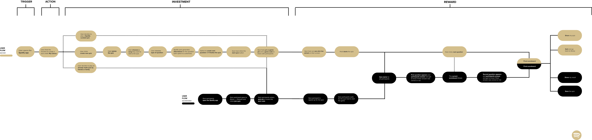
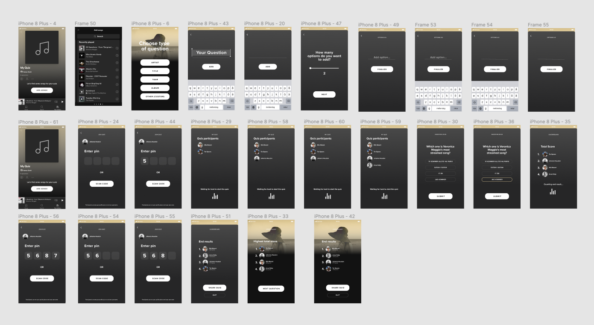

Spotify transformed the way people enjoy audio by allowing users to stream on demand. Spotify is all over the world. Today, millions of people in 92 countries have access to over 60 million tracks, whenever and wherever they want.
Spotify is also about the element of discovery: browsing artist collections, listening to radio stations, or tuning into your friends’ favourite jams. Spotify champions the belief that listening is everything. They inspire fans to listen to the world around them. They love music, podcasts, and all things audio culture – and they lean into that authentic love and excitement. Spotify’s personality is casual, relatable, friendly, empathetic, and self-aware.
Click here to see the final delivery for the DA&D - New Blood Awards ➔

The UX/UI challenge, as given by D&AD - New Blood Awards, was to get listeners to soundtrack and share their life through Spotify. How can Spotify make the listening experience a social experience by enabling people to share the audio that means the most to them? How can they help listeners build a deeper connection with friends and artists?
The challenge included creating a feature within Spotify that help people easily share content & get people talking. The concept should also serve a global audience & bring communities together.
The brief by D&AD was solved as a sprint during one weekend in March 2021.
Given the time we had to complete the brief we chose to do it in a sprint format. Despite the time pressure we wanted to create something that were highly entertaining and sharable for users, as well as something we strongly believed in as a team.
Since we chose to solve the brief in a sprint-format our time for conducting research was limited. However, we managed to do some desktop research & some interviews with family and friends, in parallell to our studies, before going into the sprint.
We were given two personas from the D&AD - New Blood brief. These personas are persented below. They were taken into consideration when going into the ideation.
The person who has the perfect playlist for every situation, built by exploring music on Spotify and saving their favourites. They love discovering the “music of the moment,” DJing at parties, and want an easy way to listen to and share music with friends. Since their friends are music lovers too, they share their playlists as social currency and proof of their own passion.
Passionate music collectors who love discovering new music and carefully crafting playlists to showcase their deep knowledge of music. They share their music because they want to show their excellent curation skills and taste. Music is a core part of their identity, so they value the ability to follow and be followed based on this. They also love collaborating on playlists virtually, even with people they haven’t met before.
I love music quizzes, but I wish there was an easier way to create and host one.
From the personas, and the brief research insights we collected, we formulated a "How might we.." question. The final "How might we.." that was chosen because it sparked the most ideas for ideation was:
From the "How might we.." we tried to find different solutions. We ideated for 30 minutes in an open format on different solutions. Since we solved the brief during a sprint, and therefore had limited time, we made sure to put a larger focus on that the idea chosen needed to be of high quality, but also feasable to prototype within the short time frame.

We evaluated the ideas on prototypinng feasbility, level of creativity & how well it solved the brief. We made sure that the concept could be prototyped within 48 hours.
After evaluation and discussion we choose to move forward with the idea of creating a Music Quiz that could be integrated into the Spotify app in a seamless way, since this idea got the highest scores.
By removing all the obstacles and pains connected to creating and participating in a music quiz, we have designed a smooth user experience, allowing quiz host and participants to unite and share their passion for music. It’s fun. It’s easy. It’s engaging. Find quizzes in your library, home, or in the search section.
Social Trendsetters and Master Curators want to share their taste and knowledge in music. When using Spotify Quiz, it’s easier than ever to involve friends and followers in this mission. Just press ‘Share on Instagram Stories’ and a direct link to Spotify shows up in the top left corner, which allowes you to share your quizzes and scores. Let the bragging and geeking begin.
The solution was presented to D&AD - New Blood Awards as a 1 min video, supported by 4 pictures presenting the process from insights to the solution. The picture material you can see below and the final video can be watched here.

The solution was a Music Quiz integrated in a smooth way into the Spotify app.

To understand and empathize with our users we created a user flow that mapped out all the different steps of the user journey. We analyzed and divided the flow for the user into sections of investments and rewards to ensure the user would have more rewards compared to the investments they have to make throughout the flow. The user flow guided us in creating the screens for each step that the user could go throught in their journey within the app.
A map of the user flow - Click the image for a high-resolution version of the user flow.
We created wireframes & high-fi screens for all the steps in the user flow. We used Spotify Design's library in order to make the design of the Music Quiz in line with the design of the Spotify app.
The high-fi prototype was created using Figma.
The user first creates the questions that they want to include in the quiz. The user can make questions from songs, artists, titles, years, albums or make their own custom questions. Next they choose how many options they want for each question and add in the options. They then start the quiz and a QR-code and number code is generated. All participants can scan the quiz masters phone or manually type in the number code (if the one participating is not physically close). The quiz then starts and the participants answer. As the quiz goes on the participants can see the scoreboard after each answered question.
Below you can watch the final video that was delivered to D&AD - New Blood Awards 2021. The video summaries key research insights, show case the UX/UI mock-up, explains our creative process briefly & explains the overall solution that we came up with.
After the sprint I have made some reflections on the experience, which you can read below.
There is so much potential to do a lot of things in a short amount of time. Especially when you have a high functioning, high performing and dedicated team. Even though our sprint only lasted for 48 hours we had time to do a lot of things. This was maily due to the structure of the team and that eveyone in the team had their clear roles.

During this sprint I mainly took the UX Design perspective. I had a holistic perspective of ther product and customer journey. I feel that I come to my right in these kind of environments and roles.